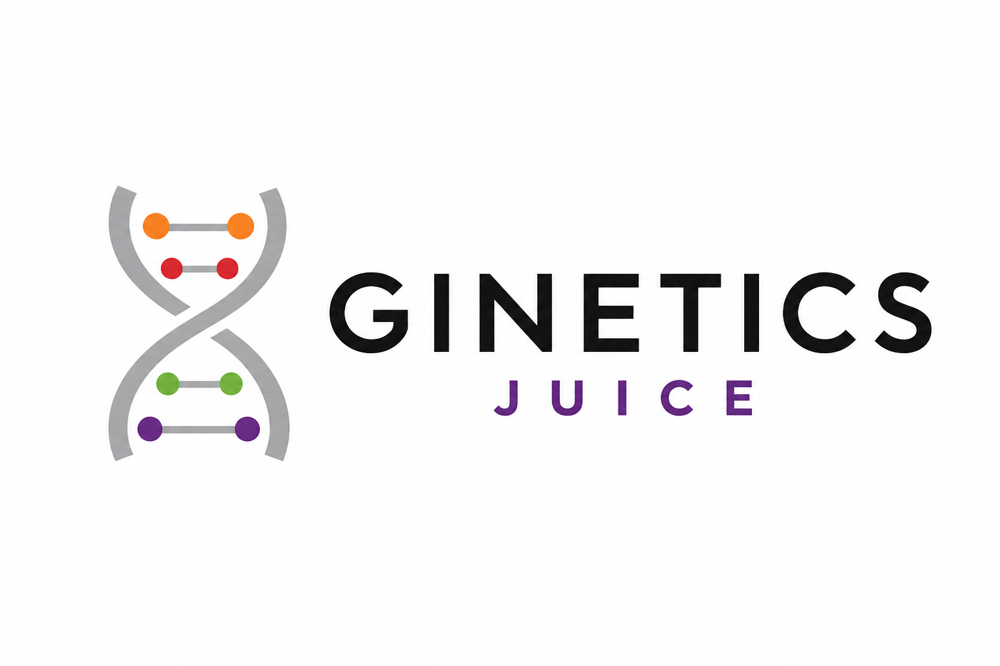
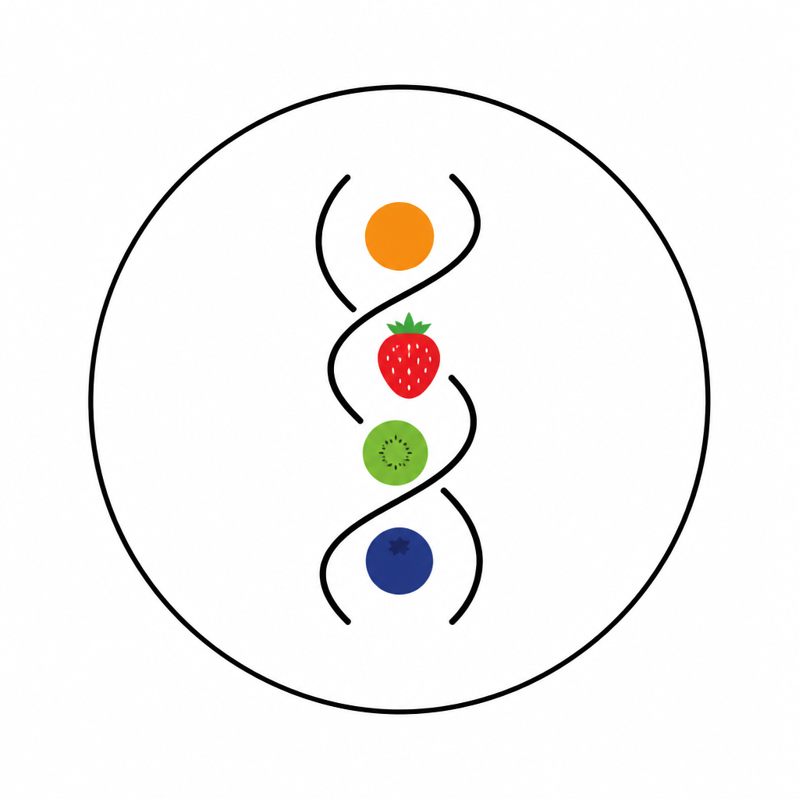

Working marks
Pick a logo.
Flat marks inspired by the chrome helix poster — no slogan strip, no bottle, no 3D render. A is on the site now so you can see it in the header. Reply with A, B, C, or D.
A — Helix on white
Simple icon. Lives next to the Ginetics wordmark. On the site now.
B — Purple badge
App-icon style. White helix on the brand purple.
C — Lockup
Icon plus GINETICS JUICE. Could replace icon + wordmark in the header.

D — Stamp
Circle with tiny fruit icons in the helix. More literal, still flat.

The campaign poster (helix, type, bottle — no pink strip) stays art, not the logo. It’s on the contact photo rail.